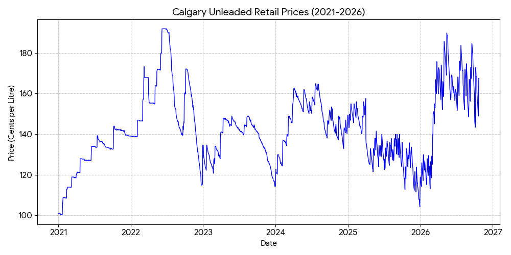
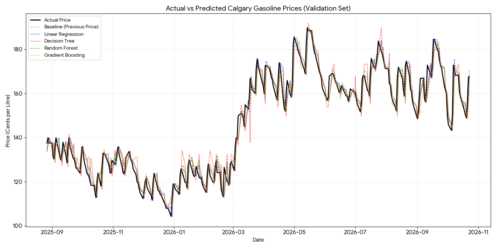
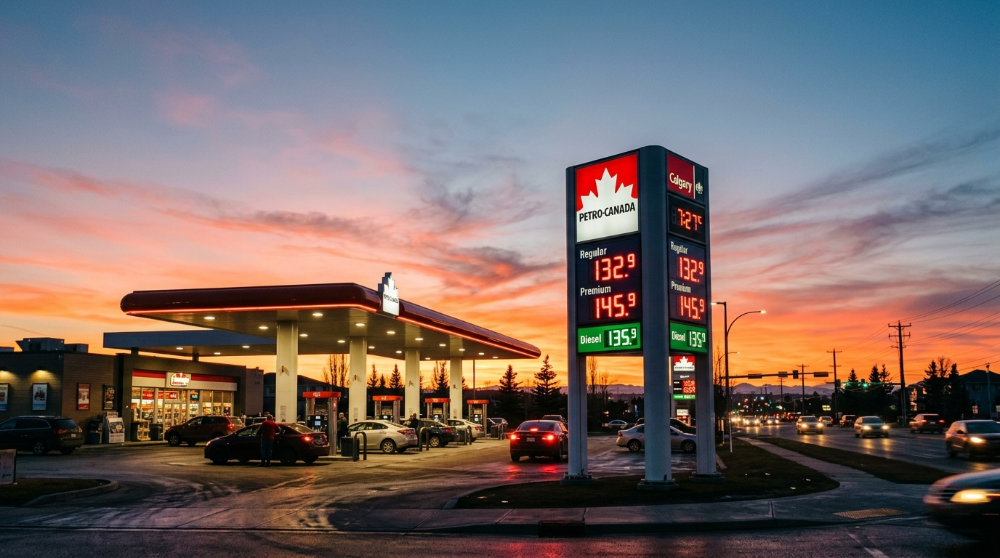

1,516Historical observations
303Validation rows
3.3765Linear Regression MAE · ¢/L
7.6%Approx. MAE improvement vs baseline
Model validation
Lower MAE and RMSE represent smaller prediction errors on this solution's held-out observations.
| Model | MAE (¢/L) | RMSE (¢/L) | MedAE (¢/L) |
|---|
Relative MAE
Submitted reference images



Source data and worksheets
All files are provided for traceability. Input images and worksheets are user-supplied, not independently validated as application screenshots.
model_predictions.csvcleaned_data.csvlag_features.csvtrain_data.csvvalidation_data.csvFilled_Worksheet.pdfCalgary_Fuel_Forecasting_Worksheet_Final_Prompt.docx.pdfComparison limitation: This model run uses its own features and holdout procedure. It is not an apples-to-apples ranking of Gemini against other AI platforms without a harmonized benchmark. Do not interpret ±1.96 × RMSE as a statistically calibrated confidence interval without coverage testing.